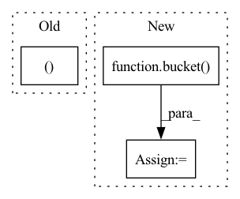

Pattern ID :27422

Before Change
Wsq, Wsk, pos_q, pos_k = map(partial(expand_batch_and_merge_head, b), (self.linear_sort_q, self.linear_sort_k, self.q_pos_emb, self.k_pos_emb))
k_r = torch.cat((cumavg(k, dim=1), k), dim=-1)
k_r = bucket(buckets, k_r)
b_q_r = b_k_r = k_r[:, :, 0]
After Change
pos_q, pos_k = map(partial(expand_batch_and_merge_head, b), (self.q_pos_emb, self.k_pos_emb))
q_r = bucket(buckets, cumavg(q, dim=1))
k_r = bucket(buckets, cumavg(k, dim=1))
b_q_r = q_r[:, :, 0]
b_k_r = k_r.sum(dim=2)
In pattern: SUPERPATTERN
Frequency: 3
Non-data size: 3
Instances
Fragment ID: 81567052
Project Name: lucidrains/sinkhorn-transformer
Commit Name: db129fab8784137d6a6c9c1224086596b9ec2fe5
Time: 2020-04-11
Author: lucidrains@gmail.com
File Name: sinkhorn_transformer/sinkhorn_transformer.py
M Class Name: CausalAttentionSortNet
N Class Name: CausalAttentionSortNet
M Method Name: forward(3)
N Method Name: forward(3)
M Parent Class: nn.Module
N Parent Class: nn.Module
M File Name: sinkhorn_transformer/sinkhorn_transformer.py
N File Name: sinkhorn_transformer/sinkhorn_transformer.py
M Start Line: 365
M End Line: 379
N Start Line: 359
N End Line: 366
'>
Before Change
R = torch.einsum("bie,bje->bij", sq, sk).to(q) * (dim ** -0.5)
if self.n_sortcut > 0:
values, indices = torch.topk(R, self.n_sortcut)
values = values.reshape(bh, self.n_sortcut, -1)
indices = indices.reshape(bh, self.n_sortcut, -1)
R = torch.zeros(bh, self.n_sortcut, buckets, device=device, dtype=dtype).scatter(2, indices, values)
After Change
kv_buckets = k.shape[1] // kv_bucket_size
b_q = bucket(buckets, q) if self.n_sortcut == 0 else bucket(1, q)
b_k = bucket(kv_buckets, k)
sq = b_q.mean(dim=2)
sk = b_k.mean(dim=2)
'>
Fragment ID: 81567055
Project Name: lucidrains/sinkhorn-transformer
Commit Name: 661c2edf85ed877510c714a024b5332299a4ee00
Time: 2020-05-14
Author: lucidrains@gmail.com
File Name: sinkhorn_transformer/sinkhorn_transformer.py
M Class Name: AttentionSortNet
N Class Name: AttentionSortNet
M Method Name: forward(4)
N Method Name: forward(3)
M Parent Class: nn.Module
N Parent Class: nn.Module
M File Name: sinkhorn_transformer/sinkhorn_transformer.py
N File Name: sinkhorn_transformer/sinkhorn_transformer.py
M Start Line: 370
M End Line: 386
N Start Line: 383
N End Line: 402
'>
Before Change
// bucket query, key, values
bucket_fn = partial(bucket, buckets)
b_q, b_k, b_v = map(bucket_fn, (q, k, v))
// calculate reordering matrix R with simple sort net
After Change
// bucket query, key, values
b_q = bucket(buckets, q)
b_k, b_v = map(partial(bucket, self.kv_buckets), (k, v))
bsz = b_k.shape[2]
'>
Fragment ID: 81567051
Project Name: lucidrains/sinkhorn-transformer
Commit Name: 5cd330003e7689cd49cecf3eaf9491d462ec131d
Time: 2020-04-09
Author: lucidrains@gmail.com
File Name: sinkhorn_transformer/sinkhorn_transformer.py
M Class Name: SinkhornAttention
N Class Name: SinkhornAttention
M Method Name: forward(5)
N Method Name: forward(5)
M Parent Class: nn.Module
N Parent Class: nn.Module
M File Name: sinkhorn_transformer/sinkhorn_transformer.py
N File Name: sinkhorn_transformer/sinkhorn_transformer.py
M Start Line: 197
M End Line: 234
N Start Line: 198
N End Line: 237